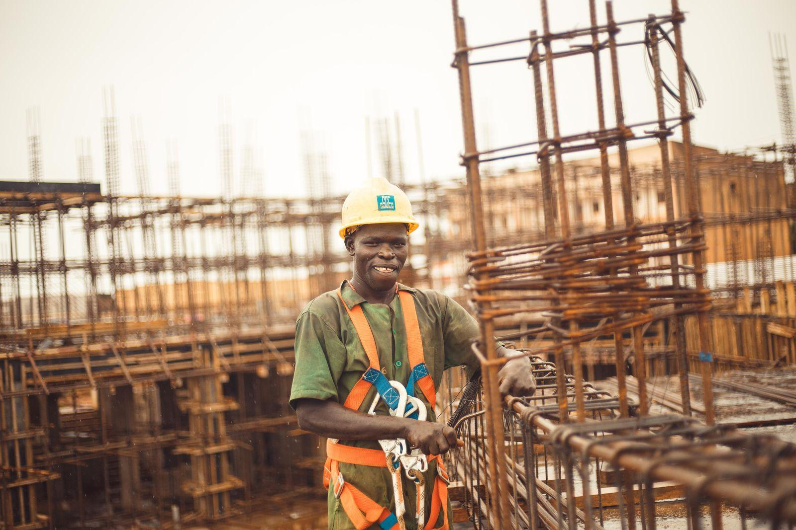

Tjänster
Vi är 18 personer på kontoret vid Hammarby Kaj, varav sju projektledare. Vi bygger 30–40 anläggningar om året på mellan 20 och 300 kW, oftast på platta papptak, sedumtak eller bandtäckt plåt från 30-talet.
Var står föreningen i dag?

Förstudie och stämma
De flesta projekt faller inte på taket utan på stämman. Vår förstudie visar investering, återbetalning och påverkan på avgiften per lägenhet.
Förstudien kostar 18 000 kr och dras av om föreningen beställer anläggningen.

Solceller på flerbostadshus
Vi bygger på papp, sedum och plåt, ofta med ballastsystem som inte kräver hål i tätskiktet. Allt samordnas med takentreprenörens garanti.
En anläggning på 100 kW täcker ungefär fastighetselen för 80 lägenheter.

Laddinfrastruktur
Vi dimensionerar laddningen efter fastighetens servis, så att 40 bilar kan ladda samtidigt utan att huvudsäkringen behöver höjas.
Medlemmarna betalar för sin el via appen och föreningen slipper administrationen.

IMD och drift
Med individuell mätning och debitering kan solelen användas i lägenheterna, inte bara i trapphus och tvättstuga. Det höjer egenanvändningen från 30 till 70 procent.
Driftavtalet ger styrelsen en årsrapport som passar rakt in i förvaltningsberättelsen.
Från styrelserum till tak
- 1

Styrelsemöte
Vi kommer till ett styrelsemöte, går upp på taket och tittar i elrummet. Det kostar ingenting.
- 2

Förstudie
Inom fyra veckor får styrelsen en rapport med kalkyl, ritning och förslag till stämmobeslut.
- 3

Stämma och bygglov
Vi presenterar på stämman och söker bygglov om det behövs. Handläggningstiden i Stockholm är 6–10 veckor.
- 4

Bygge och drift
Själva montaget tar två till fyra veckor. De boende får information i trapphusen innan ställningen kommer.
Ansvar för hela bygget
- Elinstallatör ABAuktoriserade för både solcellsanläggningar och fastigheternas el- och mätsystem.
- BAS-P och BAS-UVi tar arbetsmiljöansvaret för planering och utförande på varje bygge.
- Medlem i Svensk SolenergiVi följer branschens riktlinjer för avtal och kalkyler.
- Heta arbetenAlla montörer har certifikat från Brandskyddsföreningen för arbete på papptak.